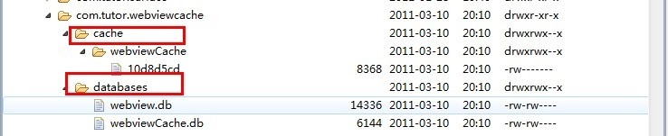

上一节我总结了下WebView的实用用法：实用笔记－WebView大讲堂。这一节我想总结下针对WebView的优化。
1. WebView缓存机制
2. 几种缓存方式的实现
3. 其他的缓存策略
一 . Android WebView缓存机制
WebView中存在着两种缓存：网页数据缓存（网页数据，url等）、H5缓存（H5代码缓存数据）
不同的缓存数据会保存在不同的文件目录下.
当我们加载Html时候，会在我们data/应用package下生成database与cache两个文件夹:
我们请求的Url记录是保存在webviewCache.db里，而url的内容是保存在webviewCache文件夹下。

我们需要首先确保这里设置了缓存可用，才可以继续设置使用何种缓存策略。
下面我们来看一下webview的五种缓存模式：
LOAD_CACHE_ONLY: 不使用网络，只读取本地缓存数据
LOAD_DEFAULT: 根据cache-control决定是否从网络上取数据。
LOAD_CACHE_NORMAL: API level 17中已经废弃, 从API level 11开始作用同LOAD_DEFAULT模式
LOAD_NO_CACHE: 不使用缓存，只从网络获取数据.
LOAD_CACHE_ELSE_NETWORK，只要本地有，无论是否过期，或者no-cache，都使用缓存中的数据。
- 几种缓存方式的实现
（1）使用LOAD_CACHE_ELSE_NETWORK缓存模式，这样需要在APP退出的时候清除webview缓存，但是这样做有一个弊端就是如果当前App已经是打开状态，网页内容有更新的话不会看到；
（2）使用LOAD_DEFAULT这种缓存方式，数据从缓存中获取还是从网络中获取根据H5页面的参数判断，这样做的好处是可以动态的处理更新内容；
设置缓存
mWebView.getSettings().setJavaScriptEnabled(true);
mWebView.getSettings().setRenderPriority(RenderPriority.HIGH);
//设置 缓存模式
mWebView.getSettings().setCacheMode(WebSettings.LOAD_DEFAULT);
// 开启 DOM storage API 功能
mWebView.getSettings().setDomStorageEnabled(true);
//开启 database storage API 功能
mWebView.getSettings().setDatabaseEnabled(true);
String cacheDirPath = getFilesDir().getAbsolutePath()+APP_CACAHE_DIRNAME;
// String cacheDirPath = getCacheDir().getAbsolutePath()+Constant.APP_DB_DIRNAME;
Log.i(TAG, "cacheDirPath="+cacheDirPath);
//设置数据库缓存路径
mWebView.getSettings().setDatabasePath(cacheDirPath);
//设置 Application Caches 缓存目录
mWebView.getSettings().setAppCachePath(cacheDirPath);
//开启Application Caches 功能
mWebView.getSettings().setAppCacheEnabled(true);
- 退出App时清除缓存
//清理Webview缓存数据库
try {
deleteDatabase("webview.db");
deleteDatabase("webviewCache.db");
} catch (Exception e) {
e.printStackTrace();
}
//WebView 缓存文件
File appCacheDir = new File(getFilesDir().getAbsolutePath()+APP_CACAHE_DIRNAME);
Log.e(TAG, "appCacheDir path="+appCacheDir.getAbsolutePath());
File webviewCacheDir = new File(getCacheDir().getAbsolutePath()+"/webviewCache");
Log.e(TAG, "webviewCacheDir path="+webviewCacheDir.getAbsolutePath());
//删除webview 缓存目录
if(webviewCacheDir.exists()){
deleteFile(webviewCacheDir);
}
//删除webview 缓存 缓存目录
if(appCacheDir.exists()){
deleteFile(appCacheDir);
}
二 .其他的缓存策略
网页在加载的时候暂时不加载图片，当所有的HTML标签加载完成时在加载图片具体的做法如下初始化webview的时候设置不加载图片
webSettings.setBlockNetworkImage(true);
然后在html标签加载完成之后在加载图片内容:
@Override
public void onPageFinished(WebView view, String url) {
super.onPageFinished(view, url);
mWebView.getSettings().setBlockNetworkImage(false);
}
关于更多的WebView可以参考：WebView问题集锦
欢迎大家留言，点赞。